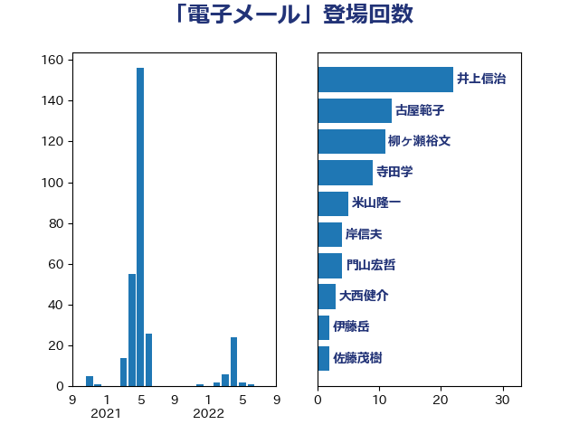

単語「電子メール」

| 井上信治 | 自由民主党 | 22 回 |
| 古屋範子 | 公明党 | 12 回 |
| 柳ヶ瀬裕文 | 日本維新の会 | 11 回 |
| 寺田学 | 立憲民主党 | 9 回 |
| 米山隆一 | 立憲民主党 | 5 回 |
| 岸信夫 | 自由民主党 | 4 回 |
| 門山宏哲 | 自由民主党 | 4 回 |
| 大西健介 | 立憲民主党 | 3 回 |
| 伊藤岳 | 日本共産党 | 2 回 |
| 佐藤茂樹 | 公明党 | 2 回 |
| 吉田統彦 | 立憲民主党 | 2 回 |
| 山際大志郎 | 自由民主党 | 2 回 |
| 川田龍平 | 立憲民主党 | 2 回 |
| 田村智子 | 日本共産党 | 2 回 |
| 石井準一 | 自由民主党 | 2 回 |
| 鎌田さゆり | 立憲民主党 | 2 回 |
| 階猛 | 立憲民主党 | 2 回 |
| 串田誠一 | 日本維新の会 | 1 回 |
| 伊藤俊輔 | 立憲民主党 | 1 回 |
| 伊藤孝江 | 公明党 | 1 回 |
| 塩川鉄也 | 日本共産党 | 1 回 |
| 塩田博昭 | 公明党 | 1 回 |
| 岸真紀子 | 立憲民主党 | 1 回 |
| 松村祥史 | 自由民主党 | 1 回 |
| 武田良太 | 自由民主党 | 1 回 |
| 永岡桂子 | 自由民主党 | 1 回 |
| 玉木雄一郎 | 国民民主党 | 1 回 |
| 田村憲久 | 自由民主党 | 1 回 |
| 芳賀道也 | 国民民主党 | 1 回 |
| 若宮健嗣 | 自由民主党 | 1 回 |
| 藤岡隆雄 | 立憲民主党 | 1 回 |
| 金子恭之 | 自由民主党 | 1 回 |
| 阿部弘樹 | 日本維新の会 | 1 回 |
| 阿部知子 | 立憲民主党 | 1 回 |